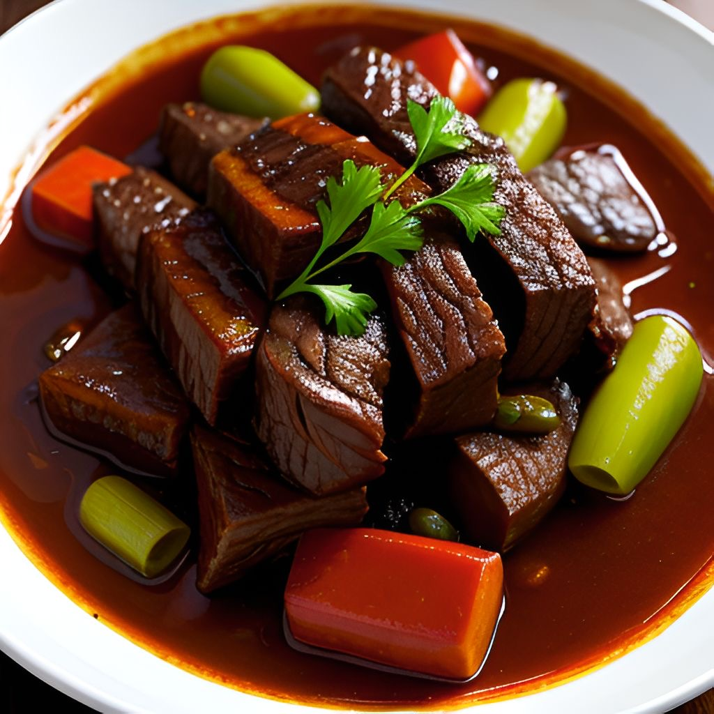
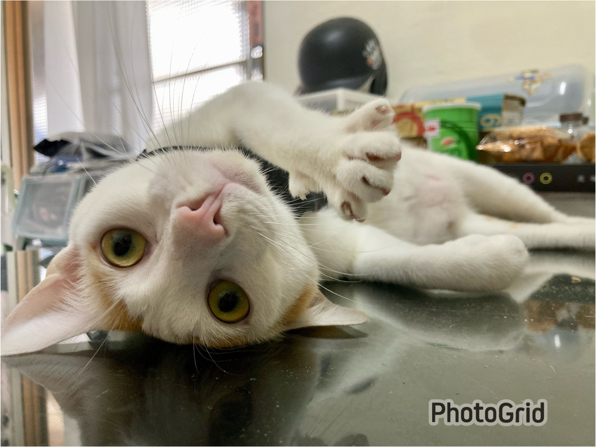

學號:90834148 姓名:廖于榕
期末心得

麻辣雞丁
蒜香炒蝦
紅燒牛肉
心得
心得:
這是第二次來上老師的電腦課，之前因為太不認真所以被當掉XD
認真上課後發現其實打程式碼也沒有說到非常困難，以前就是不會的地方都不敢問，所以很多都亂做。
這次坐到老師前面的座位，不懂的就問，請假沒上到的內容也趁空閒趕緊補上，幸好都還能應付，不會跟不上上課內容。
報告沒有做得很好，但很認真的在做，希望老師能讓我過關~
謝謝老師這學期的教導!
附上我家可愛的貓咪^^
